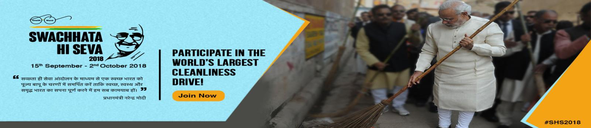
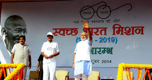
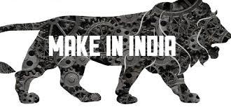
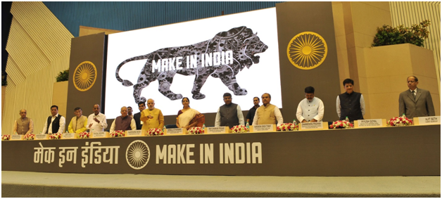
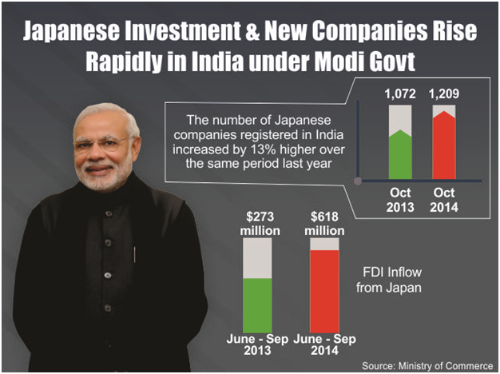

SWACHH BHARAT & FIGHT AGAINST CORONAVIRUS
“A clean India would be the best tribute India could pay to Mahatma Gandhi on his 150 birth anniversary in 2019,” said Shri Narendra Modi as he launched the Swachh Bharat Mission at Rajpath in New Delhi. On 2nd October 2014, Swachh Bharat Mission was launched throughout length and breadth of the country as a national movement. The campaign aims to achieve the vision of a ‘Clean India’ by 2nd October 2019. VIDEO: PM’s speech at the launch of the Swachh Bharat Abhiyaan https://www.youtube.com/watch?v=HmtxA_iXvbY The Swachh Bharat Abhiyan is the most significant cleanliness campaign by the Government of India. Shri Narendra Modi led a cleanliness pledge at India Gate, which about thirty lakh government employees across the country joined. He also flagged off a walkathon at Rajpath and surprised people by joining in not just for a token few steps, but marching with the participants for a long way.
While leading the mass movement for cleanliness, the Prime Minister exhorted people to fulfil Mahatma Gandhi’s dream of a clean and hygienic India. Shri Narendra Modi himself initiated the cleanliness drive at Mandir Marg Police Station. Picking up the broom to clean the dirt, making Swachh Bharat Abhiyan a mass movement across the nation, the Prime Minister said people should neither litter, nor let others litter. He gave the mantra of ‘Na gandagi karenge, Na karne denge.’ Shri Narendra Modi also invited nine people to join the cleanliness drive and requested each of them to draw nine more into the initiative.
By inviting people to participate in the drive, the Swachhta Abhiyan has turned into a National Movement. A sense of responsibility has been evoked among the people through the Clean India Movement. With citizens now becoming active participants in cleanliness activities across the nation, the dream of a ‘Clean India’ once seen by Mahatma Gandhi has begun to get a shape. The Prime Minister has helped spread the message of Swachh Bharat by urging people through his words & action. He carried out a cleanliness drive in Varanasi as well. He wielded a spade near River Ganga at Assi Ghat in Varanasi under the Clean India Mission. He was joined by a large group of local people who cooperated in the Swachhta Abhiyan. Understanding the significance of sanitation, Prime Minister, Shri Narendra Modi has simultaneously addressed the health problems that roughly half of the Indians families have to deal with due to lack of proper toilets in their homes.
Swachh Bharat Abhiyan has become a ‘Jan Andolan’ receiving tremendous support from the people. Citizens too have turned out in large numbers and pledged for a neat and cleaner India. Taking the broom to sweep the streets, cleaning up the garbage, focussing on sanitation and maintaining a hygienic environment have become a practice after the launch of the Swachh Bharat Abhiyan. People have started to take part and are helping spread the message of ‘Cleanliness is next to Godliness.’
Since years policy-makers have been debating how to give an impetus to manufacturing in India and make India a Global Manufacturing Hub. But it is Narendra Modi, who within a matter of months, launched the ‘Make in India’ campaign to facilitate investment, foster innovation, enhance skill development, protect intellectual property & build best in class manufacturing infrastructure.
The “Make in India” initiative is based on four pillars, which have been identified to give boost to entrepreneurship in India, not only in manufacturing but also other sectors. New Processes: ‘Make in India’ recognizes ‘ease of doing business’ as the single most important factor to promote entrepreneurship. A number of initiatives have already been undertaken to ease business environment. The aim is to de-license and de-regulate the industry during the entire life cycle of a business.
New Infrastructure: Availability of modern and facilitating infrastructure is a very important requirement for the growth of industry. Government intends to develop industrial corridors and smart cities to provide infrastructure based on state-of-the-art technology with modern high-speed communication and integrated logistic arrangements. Existing infrastructure to be strengthened through upgradation of infrastructure in industrial clusters. Innovation and research activities are supported through fast paced registration system and accordingly infrastructure of Intellectual Property Rights registration set-up has been upgraded. The requirement of skills for industry are to be identified and accordingly development of workforce to be taken up.
New Sectors: ‘Make in India’ has identified 25 sectors in manufacturing, infrastructure and service activities and detailed information is being shared through interactive web-portal and professionally developed brochures. FDI has been opened up in Defence Production, Construction and Railway infrastructure in a big way. New Mindset: Industry is accustomed to see Government as a regulator. ‘Make in India’ intends to change this by bringing a paradigm shift in how Government interacts with industry. The Government will partner industry in economic development of the country. The approach will be that of a facilitator and not regulator. The Make in India program has been built on layers of collaborative effort. There has been from Union Ministers, Secretaries to the Government of India, state governments, industry leaders, and various knowledge partners. A National Workshop on sector specific industries in December 2014 brought Secretaries to the Government of India and industry leaders together to debate and formulate an action plan for the next three years, aimed at raising the contribution of the manufacturing sector to 25% of the GDP in the coming years.
Prime Minister Shri Narendra Modi received today the crew of Strategic Strike Nuclear Submarine (SSBN) INS Arihant. The submarine recently returned from its first deterrence patrol, completing the establishment of the country’s survivable nuclear triad.
Stressing the significance of the successful deployment of INS Arihant for the completion of India’s nuclear triad, the Prime Minister congratulated the crew and all involved in the achievement which puts India among a handful of countries having the capability to design, construct and operate SSBNs.
Noting that the indigenous development of the SSBN and its operationalisation attest to the country’s technological prowess and the synergy and coordination among all concerned, the Prime Minister thanked them for their dedication and commitment in realising this pioneering accomplishment enhancing immensely the country’s security.
The Prime Minister commended the courage and commitment of India’s brave soldiers and the talent and perseverance of its scientists, whose untiring efforts transformed the scientific achievement of nuclear tests into establishment of an immensely complex and credible nuclear triad, and dispelled all doubts and questions about India’s capability and resolve in this regard.
The Prime Minister stated that the people of India aspire for a ‘Shaktimaan Bharat’ (Strong India) and building a New India. They have strived tirelessly to overcome all challenges in this path. He stressed that a strong India will fulfill the hopes and aspirations of over a billion Indians and will also be an important pillar for global peace and stability, especially in a world full of uncertainties and concerns.
The Prime Minister extended greetings to the participants and their families on the occasion of Deepawali, the Festival of Light. He expressed the hope that just as light dispels darkness and all fear, INS Arihant will be harbinger of fearlessness for the country.
As a responsible nation, India has put in place a robust nuclear command and control structure, effective safety assurance architecture and strict political control, under its Nuclear Command Authority. It remains committed to the doctrine of Credible Minimum Deterrence and No First Use, as enshrined in the decision taken by the Cabinet Committee on Security in its meeting chaired by the then Prime Minister Shri Atal Bihari Vajpayee on January 04, 2003.